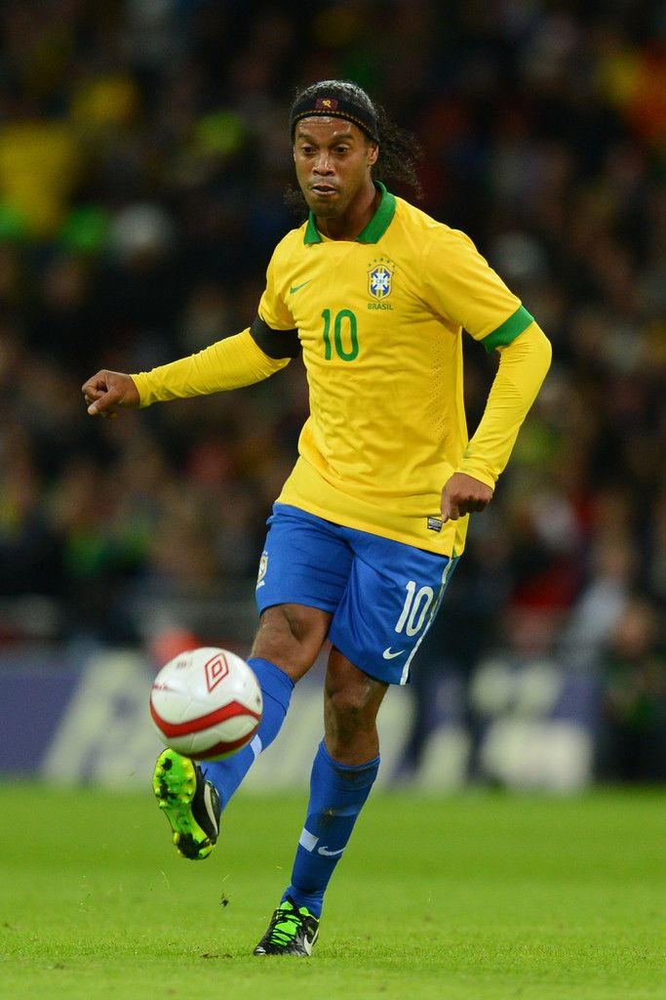
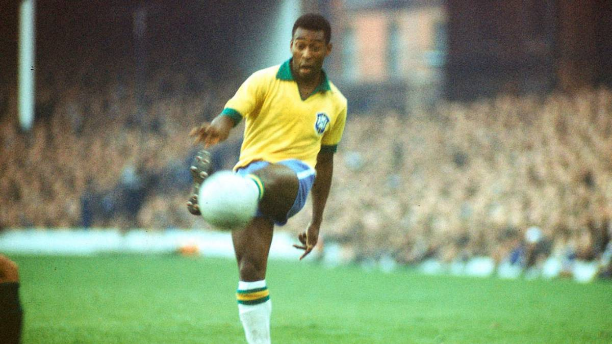
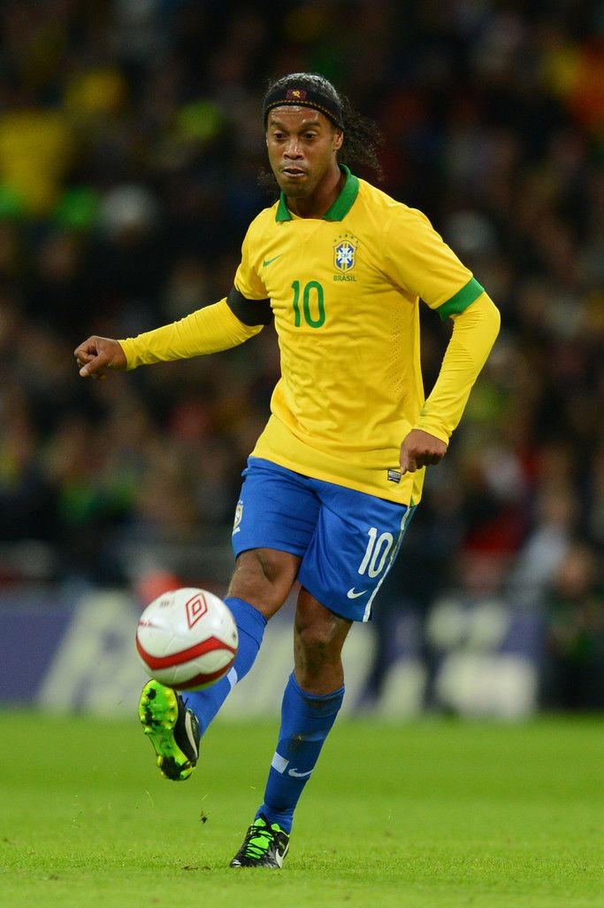
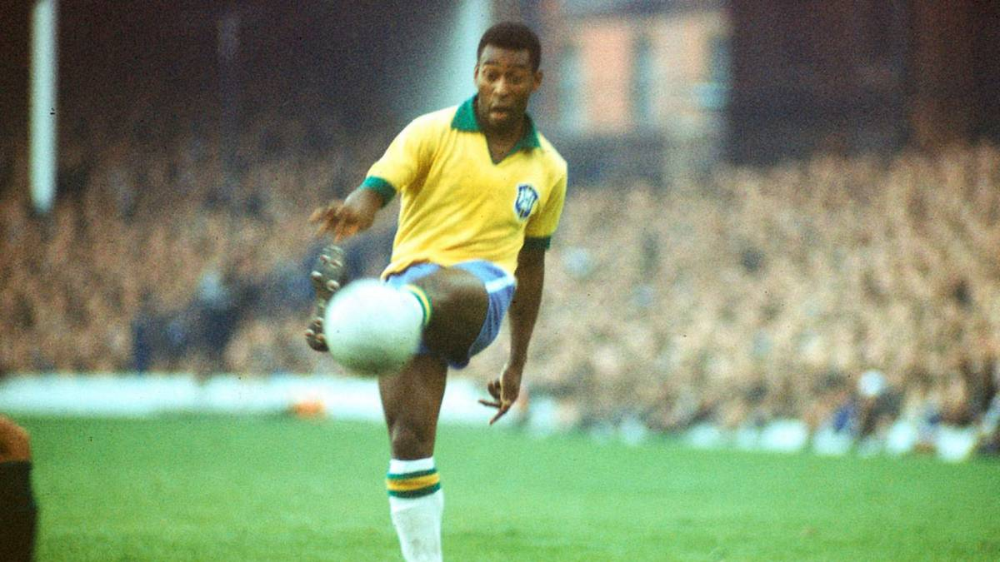

La selección de fútbol de Brasil es el equipo que representa a dicho país en las competiciones oficiales de fútbol masculino. Su organización está a cargo de la Confederación Brasileña de Fútbol, perteneciente a la Confederación Sudamericana de Fútbol (Conmebol). Conocida como Scratch do Ouro, la Verdeamarela o la Canarinha, se encuentra afiliada a la FIFA desde 1930 y es miembro asociado y fundador de la Conmebol desde 1916.
Es considerada como una de las grandes potencias del fútbol internacional, siendo, a nivel de selecciones mayores uno de los países con más copas oficiales ganadas de la historia con veinte títulos. En total Brasil ganó un total de setenta títulos internacionales oficiales, títulos internacionales oficiales sumando los conseguidos a nivel de selecciones principal y de juveniles, tratándose de un récord mundial.
Brasil es la selección más exitosa en la historia de la Copa Mundial de Fútbol; la conquistó en cinco oportunidades (1958, 1962, 1970, 1994 y 2002)1213 y fue subcampeón en dos ocasiones (1950 y 1998). Es la única selección en haber participado en todas las copas del mundo. La selección brasileña también tiene el mejor desempeño general en la competencia de la Copa del Mundo, tanto en términos proporcionales como absolutos. Tiene el récord de 76 victorias en 114 partidos jugados, 129 goles de diferencia, 247 puntos y 19 derrotas. También tiene el récord de ser el más ganador de la Copa FIFA Confederaciones con cuatro títulos (1997, 2005, 2009 y 2013) y fue finalista en otra ocasión (1999). En la Copa América es la tercera selección más ganadora habiéndola obtenido en nueve ocasiones (1919, 1922, 1949, 1989, 1997, 1999, 2004, 2007 y 2019), y ha sido once veces subcampeón (1921, 1925, 1937, 1945, 1946, 1953, 1957, 1959, 1983, 1991, 1995 y 2021); desde que la competición empezó a jugarse con el nombre Copa América en su era moderna en 1975, Brasil lidera su tabla histórica y es la selección con más títulos y finales. Actualmente se encuentra liderando la Tabla histórica de la Copa del Mundo y la Tabla histórica de la Copa Confederaciones. Es la única selección del mundo que siempre se ha clasificado para la Copa Mundial de Fútbol sin necesitar jugar ninguna repesca y una de las dos junto con España que nunca han perdido un partido de local en las eliminatorias. A nivel interconfederativo continental, Brasil posee dos Campeonatos Panamericanos de Fútbol: logró el título de este torneo continental disputado 3 veces en la edición de 1952 y en la de 1956.
Una selecion brasilera Rodeada de estrelas las cuales estan dispuestas a obtener el pentacampeonato en tierras asiatica emprenden vuelo a corea del sur para el 3/6/2002 enfrentarse a un seleccion Turka la cual tenia una dura alineacion el pardio daria lugar 20:00 hora local en el estadio de Fútbol Ulsan Munsu. el perimer gol llegaria por parte de Hasan Şaş en el minuto 45+2 de la Pimera Parte esto llevo a que la seleccion Brasilera a un cambio de alinacion y con un juego mas ofensivo lo que daria fruto y en el minuto 50 por parte de Ronaldo marcaba el 1-1 y finalmente por parte de Rivaldo en un penal marcando el 2-1 dando la victoria a la canariña .
Tras el triunfo ante Turquia tocaba enfrentarse a la china de Bora Milutinović con una alineacion poca habitual el partido se disputaria en Estadio Mundialista de Jeju, Seogwipoa. El pimer gol seria de la seleccion brasielña a los 15 minutos por parte de Roberto Carlos el cual inauguro el marcador con un 1-0, en el minuto 32 Rivaldo marcaba el Segundo y antes de irse al descanso el arbitro Anders Frisk pitaba penalti, Ronaldinho no desaprovecho esta oportunidad y marco 3-0 en 45. Tras volver del descanso era el turno de Ronaldo y a los 5 minutos marco el 4-0 con el cual concluía el partido y dejaba a brasil dentro de los clasificados para los octavos de final.
Finalmente tocaba enfrentarse a la Costa Rica de Alexander Guimaraes en el Estadio Mundialista, Suwon este partido dejaria una primera parte llena de goles los dos primeros goles por parte de Ronaldo en el minuto 10 y 3 minutos despues ponian el 2-0 en el marcador antes de irse al descanso Edminson en el minuto 38 marcaba el 3-0 un minuto despues Whachompe daba el primer gol a Costa Rica yendonos al descanso con un 3-1 en la segunda parte en el minuto 56 Gómez dio el Segundo gol a la seleccion costarricense esto reactivo a la seleccion brasielña la cual solamente 8 minutos despues Rivaldo marcaba el 4-2 y Junior cerraba esta goleada con un 5-2 dejando a Brasil primera en la tabla de clasificacion para octavos de final
| Basil |
Turquia |
| Basil |
China |
| costa rica |
Basil |
| Seleccion | Puntos | Partidos jugados | Partidos Ganados | Partidos Empatados | Partidos Perdidos | Goles a favor | Goles en contra | Diferencia de goles |
| Brasil | 9 | 3 | 3 | 0 | 0 | 11 | 3 | +8 |
| Turquia | 4 | 3 | 1 | 1 | 1 | 5 | 3 | +2 |
| Costa Rica | 4 | 3 | 1 | 1 | 1 | 5 | 6 | -1 |
| China | 0 | 3 | 0 | 0 | 3 | 0 | 9 | -9 |
La seleccion brasielña se enfrentaria a una belgica dirigida por Guy Thys en el Estadio de las Alas, Kōbe los brasielños no estuvieron nada comodos la seleccion Belga llegaba a porteria brasilera en varias ocaciones y fue Marcos el quien defendio a brasil, ronaldo tiraba a porteria pero parecia no tener suerte y ningun tiro entro en la porteia, Belgica genero miedo entre los brasielños al marcar un gol que Peter Prendergast anularia por una dudosa falta sobre Junior, esto motivo al equipo belga y fue donde Marcos se lucio salvando a la canariña en varias ocaciones dejando el marcador de la primera parte con un 0-0, La segunda parte comenzaba y el gol llegaria por parte de rivaldo en el minuto 67 y finalmente a tres minutos del final ronaldo apareceria para marcar el 2-0.
| Basil |
Bélgica  |
| Basil |
Bélgica |
| Rivaldo 67' | |
| Ronaldo 87' |
Tras vencer a una magnifica Belgica, nos espesperaba una dura Inglaterra de parte de Sven Göran Eriksson en el estadio Estadio Ecopa, Shizuoka el conjunto ingles llegaba mostrando un alto nivel de juego con una defensa imprecionante, solamente habia recibido un gol en contra en todo el mundial. Al empezar el partido el primer gol llegaria por parte de Owen en el minuto 23 dejando el 0-1 para Inglaterra Brasil intento poner el empate pero parecia mision imposible derrivar el muro ingles, no seria hasta el añadido de la primera parte donde Ronaldinho inicio una carrera dejando a los defensas prerplejos cuyo pase conecto con Rivaldo el cual pononia el 1-1 en el marcador, a los 5 minutos del comienzo tras una falta en el costado derecho Brasielño Ronaldinho sorprendio con un gol de categoria dejando 2-1 en el marcador y solo 7 minutos despues este seria expulsado dejando con 10 jugadores a Brasil a pesar de eso la seleccion inglesa no pudo marcar el gol del empate lo que debaja a brasil en semifinales
| Basil |
Inglaterra  |
Brasil se volveria a ver la cara con Turquia en Estadio Saitama 2002, Saitama. Los turcos iniciarian el partido con un ridmo frenetico y marcos volveria a salvar un corner, en la siguinete jugada fue el portero turco el cual salvaria a su seleccion de un gol de Cafu a partir de este momento la seleccion Brasielña empezaria un ataque con tiros a porteria los cuales serian todos parados por Rüştü dejando el primer tiempo con un 0-0, no seria hasta 4 minutos despues de iniciar el segundo tiempo donde Ronaldo dejaria una gran jugada la cual acabaria en remate en el poste y gol, con una seleccion turca con miedo defendio su porteria ya la seleccion brasilera queria marcar ese 2-0 finalmente no pudo ser con el 1-0 brasil se aseguraba de ir a la gran final.
| Basil |
Turquia |
La gran final se jugaria en el Estadio Internacional, Yokohama todo era perfecto incluso el arbitro quien no seria nada mas que Pierluigi Collina arbitro que destaca por su gran habilidad para dirigir los partidos, siendo el mas respetado de su categoria la Alemania de Rudi Völler presentaba al mejor portero del campeonato Oliver Kahn y el mejor delantero ronaldo, la primera parte acababa con un 0-0 y hasta ese momento Olviver siendo portero fue considerado el mejor jugador del partido. Tras el comienzo de la segunda parte a Oliver se le escapo el balon y rondalo aprovecho la ocacion marcando el 1-0 en el minuto 67, para finalizar Ronaldo sentencio el partido con el 2-0 con un golazo de categoria a 10 minutos del final y aseguraba el titulo para la canariña
| Basil |
Alemania  |
Finalmente tras el gran mundia de Korea Japoon 2002 cada jugador regueso a su club dejando un

 


